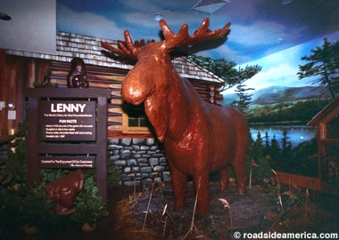

Chocolate Moose
Odin Recipes

A fun filled way to pass the time and create a lovely sweet and savory dish! (Thanks Lenny for posing for the photo above!).
Ingredients:
- 1 Fully Grown Moose.
- 40kg of your Chocolate of choice (Avoid any Chocolate with any extras inside such as nuts as this will hinder the coverage when used later on).
- 10 Cans of Whipped Cream.
- A Berry of your choice - I'd reccomend a Cherry, but others work just as well!
Equipment Needed:
- 10 Meters of Rope.
- A Very large pot to melt the chocolate inside of (Think larger than an average bathtub)
- An industrial Grade Refridgerating Unit (The type Butchers would use).
- A Very large serving Platter.
Recipe:
- Travel to Canada or Alaska to Capture an Adult Moose or get your local delivery company to locate and send it to you.
- Collect all your chocolate in your very large pot and completely melt it all - to save time do this while the Moose is in Transit.
- Once the Moose has arrived tie the Moose up with your rope.
- Coat the Moose in your melted Chocolate then set aside in Refrigerating Unit attop your Serving Platter for a Week to properly let the Moose Set.
- Remove the Rope from the Moose then cover non-chocolate covered parts where the rope was with Whipped Cream, then cover the top of the Moose with the remaining Whipped Cream.
- Place the Berry of your choice ontop of the Moose's head.
- Enjoy the dish alone or with friends!